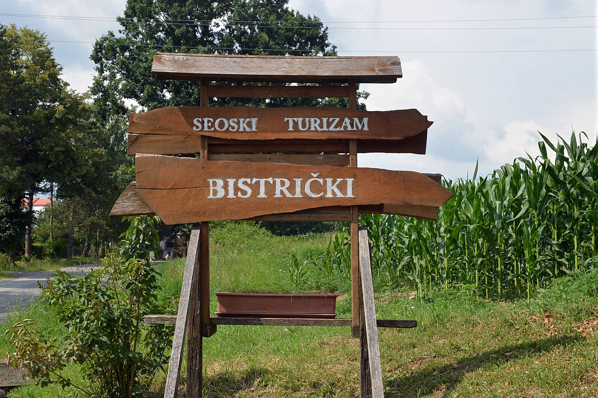
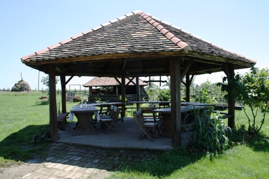
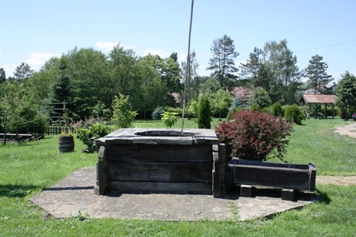
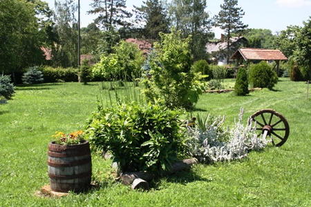

Uživajte u tradiciji Moslavine i Lonjskog polja
O nama
Imanje Bistrički nije usmjereno samo na vaš odmor i rekreaciju već i na bogatu ponudu domaće zdrave ekološke hrane i pića.
Pročitaj višeUsluge
Osim bogate ponude domaće ekološke hrane i pića nudimo i raznovrsne usluge za odmor i rekreaciju.
Pročitajte višePonosni na tradiciju
Na samo 65 kilometara istočno od Zagreba, u selu Osekovo smjestio se Seoski turizam Bistrički. Seosko imanje Bistrički nalazi se u moslavačkom selu Osekovo na samom rubu Parka prirode Lonjsko polje. Selo Osekovo može biti ponosno na brojna gnijezda svojih bijelih roda po kojem je i inače ovaj kraj poznat. Na 5000 m2 dvorišta i 20 000 m2 dodatnog prostora svaki gost može se saživjeti sa životom na selu uz razgledavanje zbirke alata starih i preko 100 godina te uz domaće životinje koje na imanju upotpunjuju doživljaj tradicijskog seoskog života.
 Samo imanje može primiti veće grupe gostiju, a moguće je i organiziranje terenske nastave i škole u prirodi za sve školske uzraste. Mogući su cjelodnevni i višednevni posjeti gdje je imanje idealno polazište za otkrivanje Moslavine. Osekovo ima i bogatu povijesnu i kulturnu baštinu. Ostaci rimske civilizacije, vile Rustice koja je u svoje vrijeme imala toplu vodu i uređenu kanalizaciju, trenutno je u fazi iskapanja. Crkva svete Ane izgrađena je 1729. g., a u selu su još tri kapelice. Starih drvenih kuća i trjemova, tipične arhitekture toga kraja, u Osekovu ima oko tridesetak. U Osekovu su brojna rodina gnijezda, na krovovima kuća nabrojit ćete trideset gnijezda, sva su aktivna i redovito iz njih u svijet odlijeću brojni mladunci.
 U blizini imanja nalaze se i razne kulturno – povijesne, etnološke te arheološke znamenitosti kao što su Crkva sv. Ane – jedna od najstarijih u Moslavini, Crkvica sv. Fabijana i Sebastijana iz 18. st. u Donjoj Gračenici kao primjer tradicijske gradnje, etno soba KUD – a Stjepan Šajnović u Osekovu te etno zbirka Kenfelja u D. Gračenici, arheološko nalazište Ciglenice kao dokaz rimske civilizacije na ovim prostorima. Sam PP Lonjsko polje oduzet će posjetiteljima dah svojom ljepotom i bogatim biljnim i životinjskim svijetom koji se može pronaći i vidjeti samo ovdje. Nasuprot Lonjskog polja uzdiže se Moslavačka gora sa svojim planinarskim i biciklističkim stazama te bogatim Vinskim cestama gdje se mogu kušati izvrsna moslavačka vina i rakije. Moslavačka gora čuva svoje tajne iz prošlih vremena ostacima plemičkih gradina sakrivenih u šumama obraslu prirodu. Ljubazni domaćini imanja Bistrički u svakom slučaju omogućiti će vam nezaboravan doživljaj.